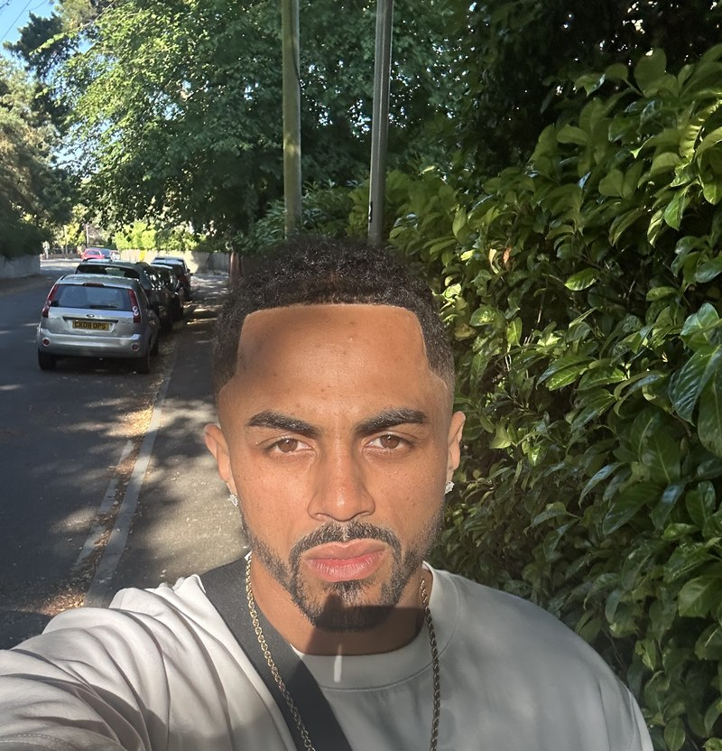
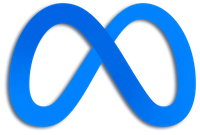
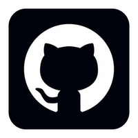
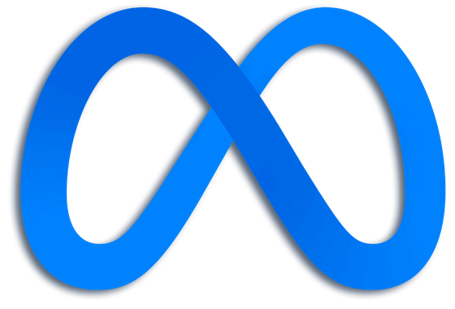
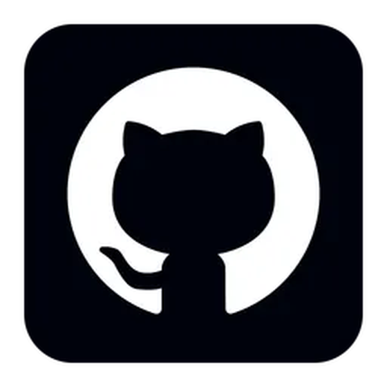
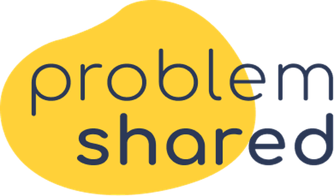
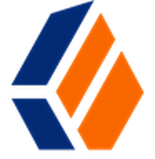

Nine years in recruitment, including stints at Meta & GitHub as a top performer. Today I'm a Senior Talent Partner helping scale one of the UK's fastest-growing digital health tech companies — hiring department heads, engineering leaders and C-suite, and shaping the hiring strategy behind them.

Meta · Technical Sourcer
GitHub · Talent Strategist Wargaming · Tech Recruiter ProblemShared · Senior Recruiter
Meta
GitHub
ProblemSharedI've hired department heads, Heads of Engineering, Technical Directors and a COO — and I've been trusted to do it by some of the biggest companies in the world, including Meta and GitHub. Today I'm doing the same at one of health tech's biggest scale-ups.
What I enjoy most is the part before the search even starts: sitting with founders, directors and C-suite to pressure-test what the role actually needs, what the market will bear, and how the interview process should be designed. Influencing hiring strategy is where a talent partner earns their seat.
I came up as a technical sourcer, and it's still my sharpest tool — but sourcing gets people to the table. Stakeholder trust, strategy and candidate experience are what get them hired.
C-suite, Heads of Department, Heads of Engineering and Technical Director-level hires — across tech, operations and gaming.
Intake and hiring syncs with Directors and C-suite, market data via LinkedIn Talent Insights, interview design coaching — and repeatedly rebuilding strained TA/hiring-team relationships.
Creative, multi-channel sourcing beyond LinkedIn — GitHub, ArtStation, X-ray search, HireEZ, Entelo — built for roles everyone else calls unfillable.
Intake to offer, with prep calls, fast feedback and honest updates — the process candidates remember and recommend, offer or not.
Six roles, one thread: building pipelines for hard-to-fill, high-priority hires — and the stakeholder trust to close them.
Leading recruitment at one of health tech's biggest scale-ups — partnering with founders and department leads on hiring strategy, headcount planning and senior hires, and bringing the standards I learned at Meta and GitHub into a fast-moving healthcare product environment.
Full-cycle recruiter in a two-person UK team, running multiple high-priority roles at once.
Executive search across European and North American Tech and Operations markets, owning the process end to end — from business development and kick-off through to post-hire check-ins.
One of the hardest companies in the world to get into — and I was a top performer there twice over. I joined Meta's ITA Flex Sourcing Team, parachuting onto the pipelines that were either missing their goals or too critical to miss them.
2.5 years embedded at GitHub — the chapter that shaped how I recruit today. Sourced high-profile Tech and Non-Tech talent across APAC, EMEA and North America via LinkedIn Recruiter, GitHub itself, and Greenhouse ATS, owning the full candidate journey from first message to hand-off.

ForgeRock (via Recoded Recruitment) Jun 2019 — Jul 2019Short embedded stint sourcing passive Site Reliability Engineers for this Identity & Access Management software company, ahead of moving onto the GitHub account.
Full lifecycle 360 recruitment across UX/UI, Java and PHP, working with hiring managers and candidates across Europe and South America — where it all started.
A few numbers that back up the story.
Set GitHub's record for the highest number of sourced hires within a single quarter.
Hired 2 specialist Lead Software Engineers in my first month on Meta's Reality Labs pipeline — one of the org's most niche, specialist pipelines, where a new sourcer's first hire typically takes 6–12 months.
First interview to final interview, on a Senior Gameplay & Graphics/Rendering Engineer pipeline (IC6 level).
Designed and delivered a diversity sourcing presentation to GitHub's Talent Acquisition team and external guests.
Recognised at Meta's Talent All Hands for work with a lasting effect beyond a single hiring quarter.
Set strategy and individual goals for Employee Outreach across the ITA organisation.
Meta "GitHub Sourcing" training — measured impact
Averages out of 10 across 4 teams — including the full Software Engineering Recruitment team — before and after the session I built and delivered.
Direct feedback from managers, colleagues and candidates at Meta and GitHub.
Oscar has been a pleasure to have flexing to the SpecSWE team — he pivoted to the AR/VR pipeline and has done an amazing job since doing so. Oscar asks fantastic questions; he has been very humble in the way he has approached learning the pipeline, and he has applied himself to a different type of recruiting to what he has done at Meta. Oscar has been very consistent, hitting his outreach and screen target week on week. Keep doing what you're doing, Sir — fantastic job, and I'm lucky to be working with you.
Oscar has shown amazing drive and initiative with everything he has worked on — whether that includes smashing his calibration period and landing an offer just over 3 months into his role, or diving into diversity sourcing efforts by running his first session alone after only being in the role 8 weeks and making a huge impact on Top of Funnel numbers. He has impressed me with everything he does. We are lucky to have him on our team.
As a hiring manager, I have had the pleasure of working with Oscar for a couple of years. He quickly became my go-to person for all things talent acquisition. Oscar always quickly got to grips with the roles he worked on for me, no matter how complex the job description — I could trust him fully to come up with top quality candidates, and I rarely rejected candidates that he put forward. He's professional, energetic, smart and consistently friendly, no matter how much pressure he is under.
31 years old, still figuring out how the next pair fits in the collection.
Rarely misses a big fight card — as invested in the build-up and the story behind a matchup as the fight itself.
A rotation that's grown well past "hobby." Always tracking the next release.
Into fashion the same way he's into sourcing — always looking for what's next.